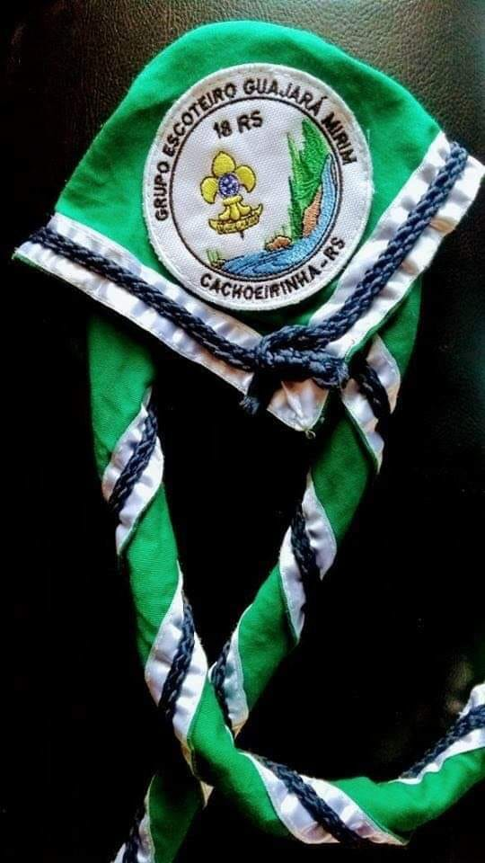

<link rel="stylesheet" type="text/css" href="../css/reset.css">
<link rel="stylesheet" type="text/css" href="../css/lenco.css">


<section id="lenco">
    <div id="lenco-foto">
        
    </div>
    <div id="lenco-texto">
       <h2>Nosso Lenço</h2>
       <p>Toda a idéia do brasão foi montada pelo então Presidente Chefe Paulo, </p>
       <p>a idéia era que o lenço fosse em tom verde, </p>
       <p>para simbolizar a luta para revitalizar a App (Área de preservação permanente) do banhadinho,</p>
       <p>e nosso comprometimento pela preservação do meio ambiente.</p>
       <p>O branco e o azul , é em homenagem ao nosso municipio de Cachoeirinha, são as cores da bandeira.</p>
       <p>A corda azul do nosso lenço, significa o laço da promessa escoteira,</p>
       <p>e na ponta com um nó direito, que simboliza que todos somos iguais dentro do grupo.</p>
       <br>
       <p><strong>"O BRASÃO"</strong></p>
       <br>
       <p>O numeral 18 é o numero do grupo junto a UEB (Uniao dos Escoteiros do Brasil)</p>
       <p>Temos uma cachoeira pequena (que simboliza o nome do nosso grupo e a cidade sede)</p>
       <p>na continuação da cachoeira temos o rio corrente que simboliza a vida constante do grupo,</p>
       <p>Dentro do rio temos algumas pedras, que simboliza os problemas que o grupo</p>
       <p>tem que contornar durante a sua jornada.</p>
       <p>Temos as arvores, que simbolizam nosso comprometimento com a natureza</p>
       <p>e a flor de lis em formato antigo, que significa o escotismo Tradicional de Baden Powell,</p>
       <p>ela esta posicionada no céu representando o sol, simbolizando que o escotismo nasceu para todos.</p>
    </div>
</section>
